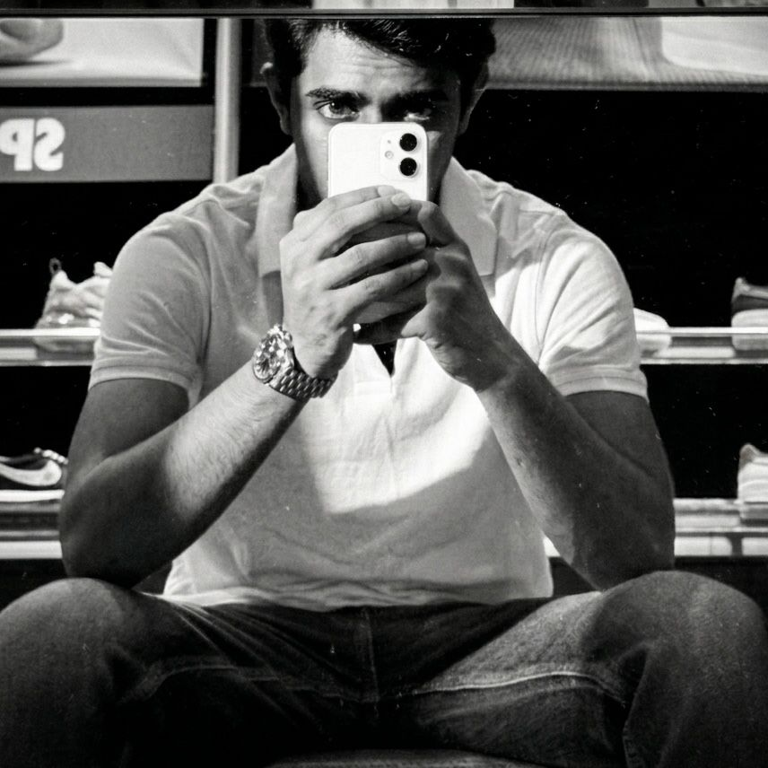
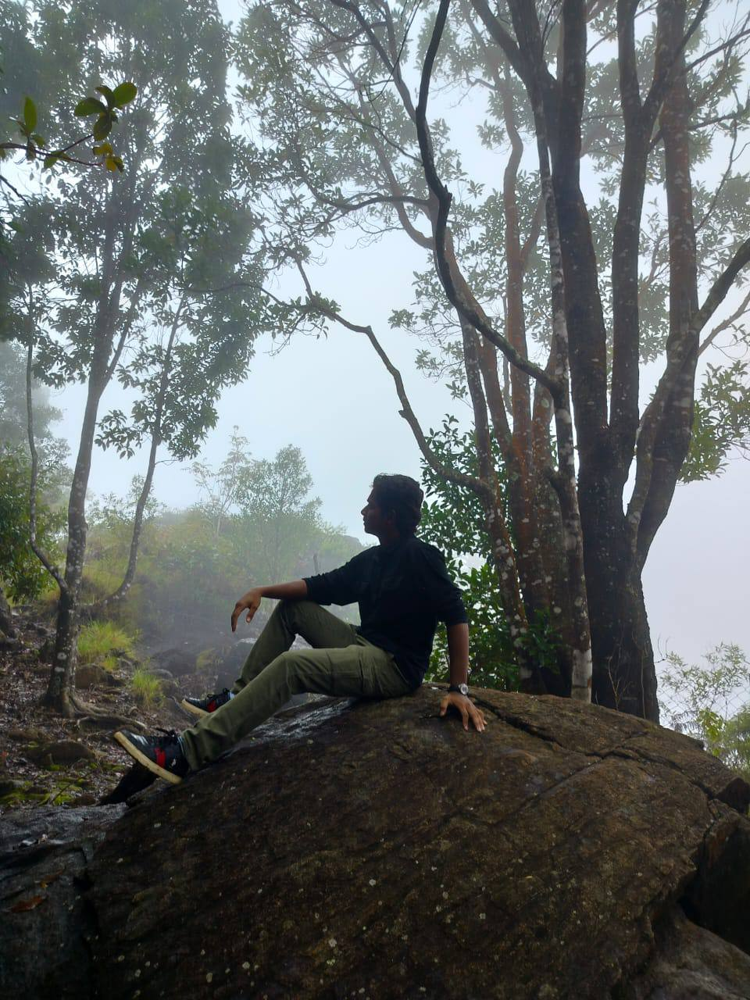
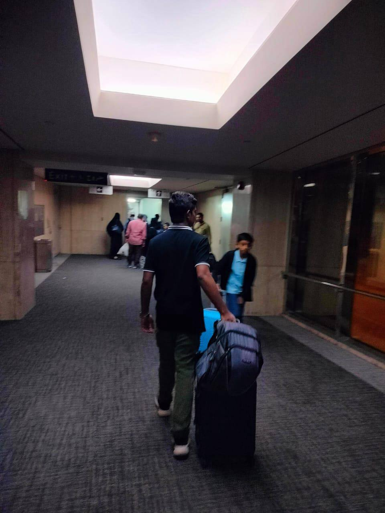
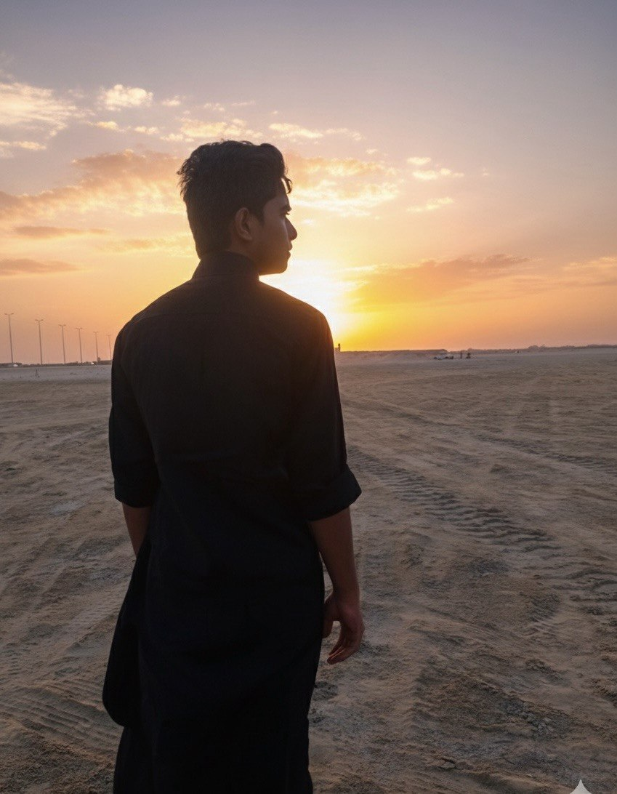
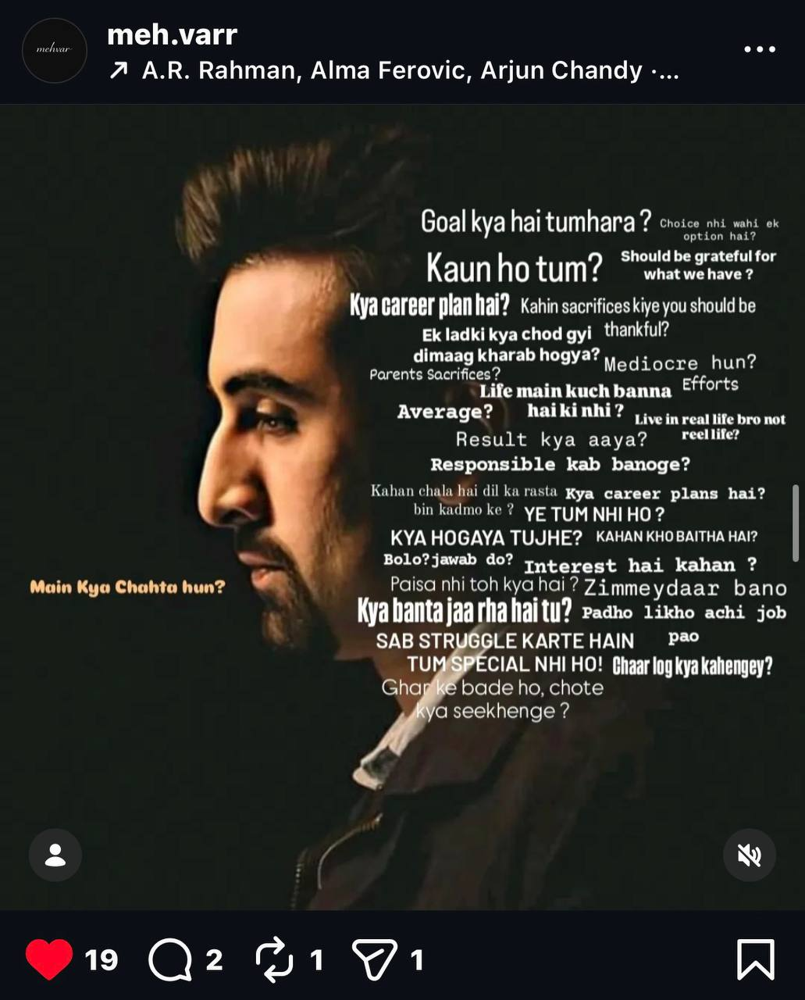
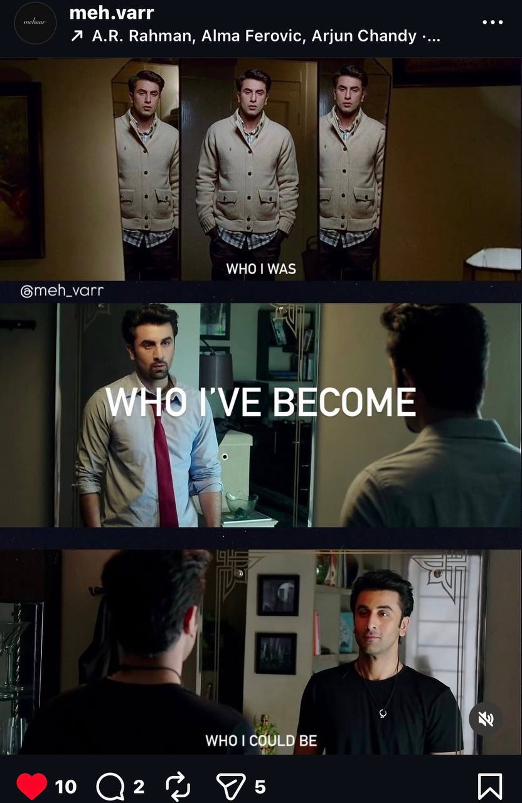
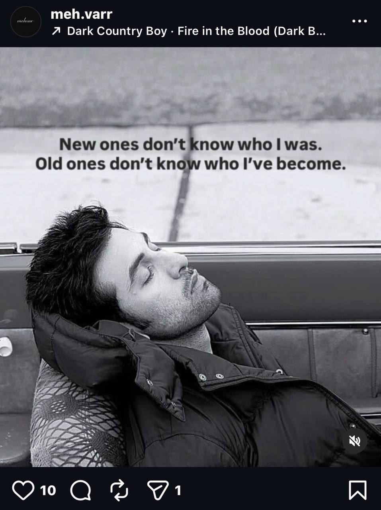

Syed Anas Ahmed is a visual storyteller — a student of business at PES University, Bangalore, quietly building a parallel world made of light, shadow, and silence. Two languages, one lens, and an endless curiosity about what emotion looks like when you hold it still.
He doesn't begin with a camera. He begins with a mood — an ache, a half-lit street, the texture of a moment that hasn't been named yet. The frame becomes the poem. His edits are story-first and transition-last. His photography is moody, low-light, and unapologetically atmospheric.
Whether he's cutting a short film or composing a caption, the question is always the same: does it feel like something?



I wasn’t made in one place — I was written across many. From the quiet deserts of Saudi Arabia to the chaos of India, from Hyderabad to Bangalore, with my roots in West Godavari, Andhra Pradesh… I kept moving, changing schools, changing boards, learning how to begin again before I could even settle.
Maybe that’s why I understand — nothing stays, but everything leaves a mark.
I’ve seen love that felt like home… and betrayal that felt like silence. I’ve had people stand beside me, and I’ve walked alone when no one did. Duniya bohat dekhi hai… itni ke ab chehron se zyada niyat pehchanta hoon. Somewhere between all of it, I stopped following paths… and started creating my own. Khud ka raasta khud dhoondta hoon.
I’m not lost. I’m just not meant to stay.
For my people, I don’t speak much — I just show up. Every time. A quiet “main hoon na” without needing to say it. Loyalty isn’t something I prove… it’s something I am.
I believe in softness, even in a world that mistakes it for weakness. Respect, especially towards women, isn’t a rule for me — it’s my nature. I belong to Islam, and I follow the path of my Prophet Muhammad (peace be upon him). His teachings don’t just guide me… they remind me who I am when the world tries to change me.
I come from a legacy of strength — a family of leaders, of men who built their own names. I’m still building mine… slowly, silently… but surely. Maybe I don’t have proofs yet. Maybe the world sees me as average. But I know — I’m not. I’m the one who walks alone… not because I have to, but because I can.
And if it ever comes to it… I’ll stand against the world, alone… and still not step back.
Still becoming.
Films and edits created for college clubs and campus productions — where a deadline sharpens a vision, and the work has to carry a room.
Story-first edits. Not transitions for the sake of transitions — rhythm for the sake of feeling. Raw footage turned into something you'll remember.
Conceptual short films, reels, and brand stories that carry a real mood. If you want something that lives beyond the scroll, this is the work.
Low-light. Moody. Compositionally intentional. Portraits, atmospheres, and images that feel like stills from a film you haven't seen yet.
Instagram-native content built with an artist's eye. Reels, stills, and captions with a consistent voice — because aesthetic consistency is its own language.
Har pal, har mod pe tu udaas hai… na jaane kya raaz hai. Itni khamoshi, kuch toh baat hai… andheri kaali ye raat hai. Gehre inn sannaton mein sirf teri awaaz hai… Kab tak chup rahega tu bhi? insaan khaas hai… Zinda hoon par jaan laash hai… iss khamoshi ka kya raaz hai?
Kabhi hum dukh mein rehte the,shayad aaj sukh se rehne lage. Kabhi kadakti dhoop mein jeene, ab galtiyon se kuch seekhne lage. Na jaane kyun, us pal ko jeete, khamoshi thi kyunki khushi ki wajah nahi thi… sirf tanhaayi saza thi khud hi. Raaz doob gaye jaise samandar mein, aa jeele apne andar mein. Ab hai waqt jeene ka, na ki apni galtiyon ko seene ka… aa dhoondte raaz teri khushi hone ka.
Na jaane dil mein kyun khataas hai… itni khamoshi ki dil madhosh ho gaya. Jo sapne the, unko yun hi mod diya, woh jo ek pyaar tha, usko bhi chhod diya. Khwabon bane the, unko bhi tod diya, jo yaari bhi itni pyaari thi, par diya… Ab sirf shayari aur diary hi rahi, dil hai toh dhadakta nahi… ab main? Woh nahi jo pehle tha kabhi… phir bhi zinda mere jazbaat hain. Iss khamoshi ka kya raaz hai?
Khamoshi ke andar bhi ek awaaz aati… Dil mein dhaki si chalti mitti si nami si kuch Baithe ko bhi maqtal dar kar ke kehti Maslan mujhe kuch kehne ke rahi ho.
The day-to-day experiments. The ones that didn't make the cut. The ones that almost did. A running visual archive between a lens and whatever catches the light.
@meh.varr — View on Instagram


— For quick responses, reach out on Instagram,
collaborations, commissions, or just a conversation